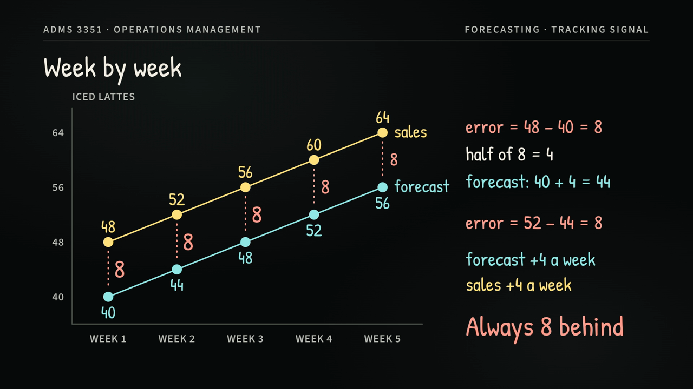
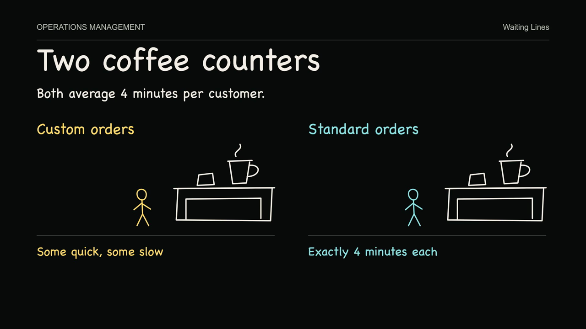
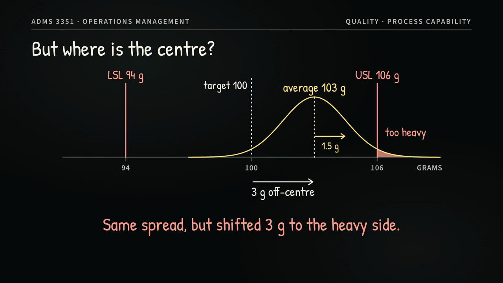

SNACK
Student Numeracy Assistance Centre at Keele
Drop in for free peer tutoring. Bring a practice problem and the step you’re stuck on.
View SNACK drop-in hours
ADMS 3351 Operations Management
Three short blackboard lessons, made by student tutors, on the questions students bring to drop-in most. Each one works a single example from start to finish, then lets you test yourself.
Start with the topic you find hardest. Each page has the video, a self-check and an example you can change.

1:51 Chapter 3The forecast is off by the same small amount every week. Is that good, or is it biased? MAD and the tracking signal answer different questions.
Watch the lesson
2:08 Chapter 7A teller and a machine serve at the same average rate, yet one line is twice as long. Follow a customer through both.
Watch the lesson
2:00 Chapter 10Cp says the process fits. Cpk says it doesn’t. See why both can be right, and what the gap tells you to fix.
Watch the lessonWatching is the easy part. These three habits are what make it stick for the test.
Every lesson stops to ask a question. Pause there and commit to an answer before you carry on.
After the video, say the idea in one sentence without looking. If you can’t, rewatch that chapter.
Use the self-check and the interactive example, then try the same steps on a PASS review question.
Student tutors at SNACK build these lessons from the questions students bring to drop-in. If a step still doesn’t click, a peer tutor will work through it with you.
Bring a practice question to a peer tutor or work through the topic with classmates.
Student Numeracy Assistance Centre at Keele
Drop in for free peer tutoring. Bring a practice problem and the step you’re stuck on.
View SNACK drop-in hoursPeer-Assisted Study Sessions
Join a free, peer-led group to practise course problems and prepare for tests. Look for ADMS 3351 in the schedule.
Find an ADMS 3351 PASS session